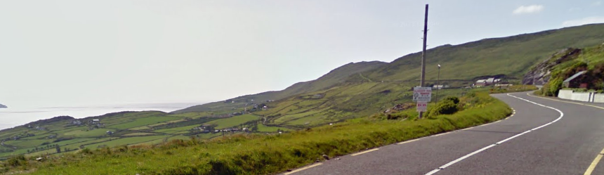

Keep in Mind
Can I find a decent place to ski? This will take some creativity and exploration. Smoother pavement is better and you may end up skiing on frontage roads, paved country roads, paved forest roads and bike paths.
Look for low traffic areas that are no too steep! Wear bright yellow shirt or jackets. Normally other car users will treat you well, they might even take your photo. High visibility clothes are the key. Below follows a few locations and handy tips how to stop.
Roller skiing Locations
Cork:
- Lake Mahon Walk
- Ballincollig Regional Park
- Greenway clonakilty
Dublin:
- Phoneix Park
- Corkagh Park
- St. Catherine’s Park /Lucan Demesne
Long Climbs:
- West Cork – Healy pass (Adrigole side)
- SW Kerry – Coomakesta
- SW Kerry – Kenmare to Molls Gap

Coomakesta
How do you stop?
Wide Stance
This is very similar to a snowplow stop when you are actually on snow. Keep your legs super wide and try to ski on sides or edges of your wheels. If you want, you can alternate your legs to slow down further, but this takes a bit more skill.
Slalom
If your trail or road is wide enough, act like a slalom skier and weave back and forth on the pavement. If you make tight enough turns on the corners, you won’t pick up too much speed. Just make sure you know who/what is coming up behind you at all times.
Tuck and Roll
This is your last resort. If you feel like you need to bail, stick one ski into the grass/gravel slightly in front of the other ski and try to keep your balance for as long as possible.